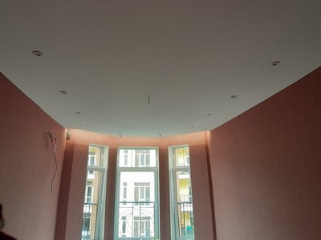
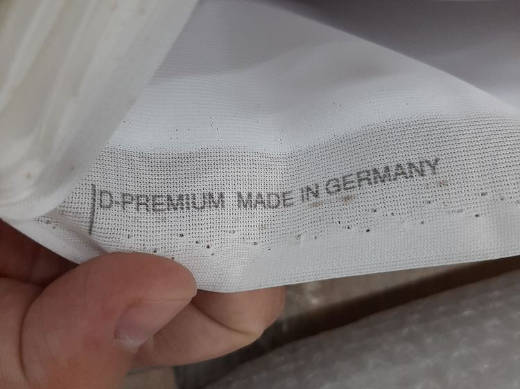
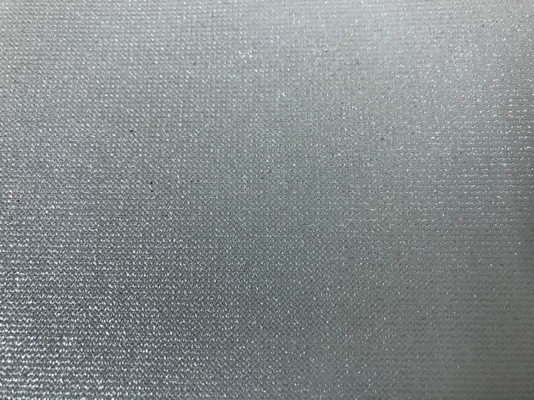

Тканевые натяжные потолки в Киеве

Тканевые натяжные потолки не так часто заказываются, как, к примеру, пленочные. Основная причина – в их заметно большей стоимости. Но на наш взгляд, их более высокая цена полностью оправдывается их преимуществами по сравнению с ПВХ пленкой.
Цены на тканевый натяжной потолок в Киеве
| ✅ Тканевый потолок в коридор: | от 4300 грн. |
| ✅ Тканевый потолок на кухню: | от 8000 грн. |
| ✅ Тканевый потолок в спальню: | от 12000 грн. |
| ✅ Тканевый потолок в гостиную: | от 13000 грн. |
Что представляет собой тканевый натяжной потолок
Современный тканевый натяжной потолок заметно отличается от того, который использовался еще в 18 веке. Кардинальная разница в используемой ткани. Если раньше применялось натуральное полотно, то сейчас искусственное, получаемое из полиэфирных нитей, которые пропитываются полиуретановыми полимерами. Получается прочная, эластичная ткань, стойкая к внешним факторам.
Преимущества и недостатки тканевых натяжных потолков
Сравнивать буде с их ближайшими аналогами – пленочными потолками.
Преимущества:
- Прочность выше минимум в 10 раз. ПВХ пленка имеет толщину максимум до 0,35 мм и может выдержать нагрузку до 120 кг/м2. При этом она очень чувствительна к острым предметам и очень легко прокалывается. А так как в натяжном потолке она постоянно находиться под натяжением, то прокол может быстро расширится вплоть до стены. Ткань, состоящая из переплетенных нитей, значительно прочнее и не боится проколов. Разрыв дойдет лишь до ближайшей целой нити. То есть меньше 1 мм.
- Морозостойкость. Тканевые натяжные полотна выдерживают до минус 45 градусов. ПВХ пленка при температуре ниже плюс 5 градусов становится хрупкой и может лопнуть даже от собственного натяжения. Поэтому в неотапливаемых помещениях (например, в загородных домах или на балконах/лоджиях) можно устанавливать только тканевые потолки.
- Воздухопроницаемость. Тканевые натяжные потолки «дышат». Поэтому:
- не возникает разности давлений до и после натяжного полотна и потолок не вздувается или прижимается к базовому потолку;
- не возникает конденсата на полотне.
- Более высокая экологичность. Несмотря на то, что тканевые потолки также на 100% синтетические, их экологичность выше, чем у ПВХ пленки. Полиэфирная ткань не выделяет никаких веществ, а полиуретановые полимеры используются, например, в производстве имплантатов.
- Огнестойкость. Тканевые полотна не горючи, то есть не поддерживают горение, чего нельзя сказать об ПВХ пленке. Класс пожаробезопасности у натяжных потолков Clipso – КМ, у Cerutti − КМ2, Descor – КМ3. У пленочных полотен в лучшем случае КМ4.
- Лучшая тепло- и звукоизоляция.
- Долговечность. Тканевое полотно служит 30-35 лет, пленочное – 15 лет.
- Более простой монтаж. Принципиальное отличие – для установки тканевого полотна его не надо нагревать. А для монтажа ПВХ пленки требуется ее нагрев до 60-70 градусов. Для этого необходима тепловая пушка с газовыми баллонами.
- Тканевые натяжные потолки можно окрашивать акриловыми красками. То есть они допускают ручную роспись. На ткани можно нарисовать полноценную картину. К тому же ее можно перекрашивать до 5 раз.
- Меньше фальсифицированной продукции на рынке. Сейчас Китай выпускает огромное количество пленочных натяжных потолков очень низкого качества, к тому же экологически опасных. А вот тканевые натяжные потолки они еще не научились массово подделывать и если производят, то на западном оборудовании. Поэтому качество приемлемое.
- Прекрасный внешний вид. Тканевые полотна смотрятся аристократично, дорого. Рисунок на них смотрится, как настоящая картина. Для дорогих интерьеров тканевый натяжной потолок – однозначный выбор.

Недостатки:
- Значительно более высокая цена. Стоимость тканевого потолка стартует с отметки 700 грн/м2, а пленочный можно найти и по 130 грн/м2.
- Небольшая цветовая палитра. В тканевых полотнах предлагается до 15 цветов, в пленочных – до 150. Правда, благодаря возможности окрашивания, в принципе, тканевое полотно можно покрасить в любой цвет на свой вкус. Для этого продаются специальные полотна под покраску.
- Впитывают запахи из-за своей пористой структуры. Поэтому на кухне тканевые натяжные потолки устанавливать не рекомендуется.
- Негерметичность. Опять же, в силу своей пористой структуры. Но полотна бренда Cerutti имеют ПВХ пленку, поэтому абсолютно герметичны.
- Более сложный уход. В отличие от ПВХ пленки, ткань имеет рельефную поверхность, поэтому убрать с нее пыль и грязь сложнее. Опять же, это не касается полотен Cerutti.
- Невозможность повторной установки тканевого полотна. Если по каким-либо причинам необходимо снять тканевый натяжной потолок повторно поставить его не получится. Необходимо заказывать новое полотно.
- Невозможно сращивать полотна. Пленочные полотна можно между собой сварить (спаять) для увеличения их ширины. С тканью это сделать невозможно. Тканевые полотна можно соединять только через багет. Но предлагаемая ширина тканевых полотен достигает 5,2 м, что достаточно для 95% всех существующих жилых помещений.

Фактура тканевых натяжных потолков
Рассмотрим основные варианты, которые использует наша компания Nova Stelya:
- фактурное полотно – получают наложением двух полотен – сетчатого (основа) и полотна с тиснением.
- сатиновое полотно – по фактуре напоминает ткань сатин, имеет мелкозернистую структуру, обладающую перламутровым эффектом;
- ситцевое полотно – по структуре напоминает сатиновое полотно, но менее плотное и пропускает свет, что позволяет установить светильник за ним, и создать в помещении таинственный полумрак;
- замшевое полотно – по фактуре близко к натуральной замше, смотрится дорого.
Бренды
Наша компания Nova Stelya предлагает тканевые натяжные потолки следующих известных брендов.
Descor
Немецкий бренд, принадлежащий компании Pongs Textil. Ткань более гладкая за счет более мелких ячеек и более эластичная, чем у Descor. Из особенностей – наличие тканей с блестками, тканей под окраску, светопроницаемых тканей. Цена – от 650 грн/м2.
Clipso
Это швейцарско-французская компания. Ее продукция считается эталоном и является наиболее дорогой – цена от 800 грн/м2. За счет крупного плетения волокон ткань получается фактурная, но менее эластичная и гладкая, чем у Descor. У этой компании наиболее богатый ассортимент по расцветке. Также предлагаются ткани с антибактериальными, антистатическими, звукоизоляционными свойствами.
Cerutti
Итальянский бренд. Выпускает уникальные пятислойные полотна с полиэстеровой тканевой основой и ПВХ слоями с двух сторон. Предлагает помимо матовых глянцевые потолки.
Преимущества компании Nova Stelya
Мы более 10 лет устанавливаем натяжные потолки в Киеве и области. Опираясь на свой собственный опыт, своим клиентам мы гарантируем:
- Высокое качество тканевого натяжного потолка. Наши специалисты производят монтаж строго по технологии, разработанной изготовителем. Используем только оригинальную продукцию брендов, а не их китайских аналогов.
- Широчайший ассортимент. Наш представитель покажет вам наш каталог и ответит на все вопросы по любому натяжному полотну.
- Устанавливаем натяжное полотно любой сложности – многоуровневое, со световыми линиями, с трековыми светильниками и т.д.
- Конкурентные цены. Заказа у нас тканевое натяжное полотно вы точно не переплатите.
- Оперативность. Любой заказ выполняем в самые сжатые сроки. Обычно это 3-5 дней.
Ответы на наиболее часто задаваемые вопросы по тканевым натяжным потолкам
🤗 Если в квартире уже сделан ремонт, можно ли установить тканевый натяжной потолок, не повреждая обои, напольное покрытие?
Да. Монтаж натяжного потолка характеризуется практическим отсутствием грязи и пыли. Наши специалисты аккуратно, используя пылесборники, установят багеты и натянут полотно. Мебель необходимо отодвинуть от стен в центр комнаты.
🤗 Кроме цены за само полотно, другие составляющие цены тканевого натяжного потолка не отличаются от пленочного потолка?
Нет. Цена за обход стояков, установку люстры и т.д. остаётся неизменной.
🤗 Если затопит тканевый натяжной потолок, что делать? Менять?
Придется произвести замену полотна
🤗 Какие светильники вы посоветуете для натяжного тканевого потолка?
Подходят любые. Термостойкость ткани значительно выше термстойкости ПВХ пленки. Но с точки зрения экономичности лучше использовать светильники со светодиодными лампами.
🤗 В каких случаях вы посоветуете устанавливать тканевый натяжной потолок?
В любых. Например, для спальни. В остальных случаях тканевый потолок себя оправдает. Он значительно более долговечный, более прочен, чем пленочный, выглядит очень аристократично, особенно при наличии рисунка. А более высокая цена – через довольно непродолжительное время об этом забудется (тем более разница в цене не такая уж и огромная), зато преимущества тканевого натяжного потолка останутся.